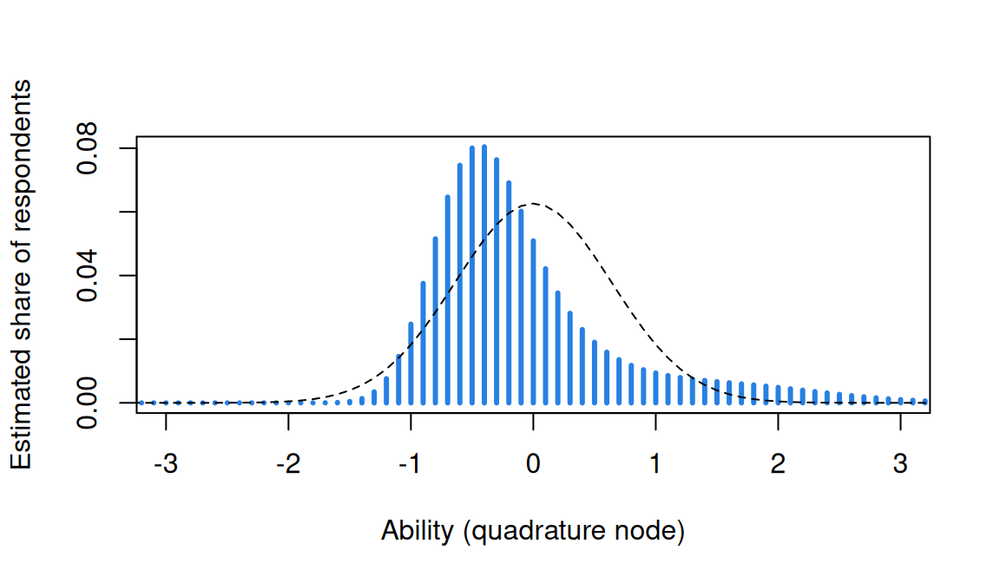

Estimating item parameters: JML and EM
What this is for
Every lesson since The Rasch model has leaned on a promise: mirt estimates the item parameters first, and everything else follows. Where do they come from? To estimate an item we’d like to know the respondents’ abilities, and to estimate abilities we need the items. Neither is observed. This lesson takes three ways out: estimate everything at once (joint maximum likelihood), condition the abilities away (conditional maximum likelihood, for the Rasch model), or integrate them out against a distribution (marginal maximum likelihood, fit by the EM algorithm). On a short test they give different answers: on eleven true-or-false science statements, the joint estimates come out stretched by 10%, as theory predicts for eleven items.
Goals
By the end of this lesson you should be able to:
- explain why estimating item parameters is a missing-data problem, and what it would be if \(\theta\) were known;
- run joint maximum likelihood, and explain why its difficulties don’t settle on the truth when the test is short, however many respondents there are;
- write the marginal likelihood on a grid of nodes, and say how direct maximization and EM climb it differently;
- carry out an E step and an M step: posterior weights, expected counts, and a weighted logistic regression for each item;
- compare joint, conditional and marginal estimates on real data, and check what the marginal model’s normal prior does to them.
Core ideas
The widgets in this lesson are rebuilt from an interactive walkthrough of EM for the 2PL that I (Ben Domingue) wrote for teaching, in the course’s notation: item \(i\), respondent \(j\), quadrature node \(q\).
θ is the missing data
Suppose we knew every respondent’s \(\theta\). Then each item would be exactly that: a logistic regression of the item’s responses on \(\theta\), with slope \(a_i\) and intercept \(-a_i b_i\), fit one item at a time (Baker & Kim, 2004). What we have instead is a matrix of 0s and 1s with no \(\theta\) column. The model is symmetric in people and items, \(\theta_j - b_i\), but the data are not: a few items and many respondents.
Joint maximum likelihood, and why it stretches
The first idea is to treat every \(\theta_j\) as one more parameter and alternate: abilities with the items held fixed, then items with the abilities held fixed, and repeat. That is joint maximum likelihood (JML), and each half is a problem we’ve already solved.
What goes wrong? Each new respondent brings more data about the items, but also a new parameter, estimated from the same handful of items however large the sample. Neyman and Scott (1948) showed that when such incidental parameters grow with the sample, maximum likelihood estimates of the structural ones (here, the items) need not converge to the truth. For the Rasch model the JML difficulties are spread out by a factor of about \(I/(I-1)\), where \(I\) is the number of items, and multiplying them by \((I-1)/I\) removes most of it (Wright & Douglas, 1977). Why spread out? Each \(\hat\theta_j\) comes from only \(I\) responses, so the estimates are more spread out than the abilities (in Estimating abilities, an SD of 1.26 against a true 1), and difficulties fit to them follow.
Try it: the JML stretch
Simulated Rasch data with difficulties evenly spaced from −2 to 2. The dots are the JML difficulties; the dashed line is the truth, the solid line \(I/(I-1)\) times the truth.
With 5 items and 1,000 respondents the JML difficulties are 1.34 times the truth, and with 5,000 respondents still 1.34: more respondents don’t cure it. More items do: 1.13 at 10 items (against \(I/(I-1)\) = 1.11) and 1.04 at 40. With 3 or 4 widely spread items the stretch exceeds \(I/(I-1)\), an approximation; the Go deeper callout below finds the exact factor for two. Joint estimates do settle down when items and respondents grow together (Haberman, 1977), so on long tests, with its correction, what is left of the stretch is small.
So CML never estimates a \(\theta\) at all, and it assumes nothing about how abilities are distributed. It rests on the Rasch model holding; it doesn’t extend to the 2PL, whose sufficient statistic, the weighted score, depends on the slopes being estimated (From the 1PL to the 4PL).
Marginal maximum likelihood: integrate θ out
The third idea treats abilities as draws from a distribution \(g(\theta)\), normal with mean 0 by default in mirt. A respondent’s pattern then has a probability that involves only the items: average its likelihood over \(g\). On the grid of nodes, with prior weights \(w_q\) that sum to 1, the marginal log likelihood is \[\ell(\text{items}) = \sum_j \log \sum_{q=1}^{Q} L(\mathbf{x}_j \mid t_q)\, w_q .\] Maximizing it is marginal maximum likelihood (MML; Bock & Aitkin, 1981). The number of parameters no longer grows with the sample, so the incidental-parameter problem is gone. The price is \(g\), taken up at the end of this section.
How do we climb this surface? Directly, by Newton–Raphson over all the item parameters at once (Bock & Lieberman, 1970), or by the EM algorithm (Dempster, Laird & Rubin, 1977), mirt’s default. Both reach the same top.
EM’s idea is easiest to see with two coins (Do & Batzoglou, 2008). Sets of ten tosses come from one of two biased coins, but we aren’t told which. If we knew, each bias would be a proportion of heads. So guess the biases; for each set, work out how probable each coin is; split the set’s heads and tails between the coins in those proportions; re-estimate each bias from its expected heads and tosses; repeat. Item estimation is the same problem with \(Q\) “coins”, the nodes, and one set of tosses per respondent.
The two ways of climbing differ in how they treat each respondent’s posterior weights, \[W_{jq} = \frac{L(\mathbf{x}_j \mid t_q)\, w_q}{\sum_{q'} L(\mathbf{x}_j \mid t_{q'})\, w_{q'}},\] the probability that respondent \(j\) sits at node \(q\), given their responses and the current items. Every \(W_{jq}\) depends on every item. In direct MML the weights move whenever any item parameter moves, tying the items together. EM computes the weights once per cycle and holds them fixed while it updates the items.
Try it: the ripple and the fix
The five items from the first widget, at their MML estimates, where every gradient is zero. Move item 1’s difficulty. The heat map shows posterior weights for six patterns; the table gives each item’s gradient with respect to \(b_i\) with the weights recomputed (direct MML) and held from the start of the cycle (EM).
With item 1 moved by 0.5, items 2 to 5, which haven’t moved, now have gradients from 3.1 to 8.0 under direct MML: their best values depend on item 1’s. Under EM their gradients stay at zero. Neither is a mistake. Direct MML sees the true slope of the surface and must move all the items together; EM climbs a simpler surface on which the items are separate, and pays with more cycles.
The E step and the M step
E step. With the current item parameters, compute every respondent’s posterior weights \(W_{jq}\), then add them up two ways: \[f_q = \sum_j W_{jq}, \qquad r_{iq} = \sum_j W_{jq}\, x_{ij}.\] \(f_q\) is the expected number of respondents at node \(q\); \(r_{iq}\) is the expected number of them who got item \(i\) right. No respondent is assigned to one node: each is spread across all of them, in proportion to how well each node explains their responses.
Try it: from one pattern to the expected counts
Choose a response pattern (with its count among the 400) and an item. The bars are the pattern’s posterior weights, the dashed line the prior. Below, the proportion \(r_{iq}/f_q\) at each node (dot size is \(f_q\)), with the item’s current curve.
The pattern 11000 (right on the two easiest items) spreads from about −1.5 to 1, peaking at 0. However the weights are spread, each respondent adds exactly 1 to the total of \(f\), and \(r_{iq}\) adds up to the number who got item \(i\) right.
M step. Now hold \(r_{iq}\) and \(f_q\) fixed and maximize, for each item separately, \[\ell_i = \sum_{q=1}^{Q}\Big[\, r_{iq} \log P_i(t_q) + (f_q - r_{iq}) \log\big(1 - P_i(t_q)\big) \Big].\] This is the logistic regression from the first widget, with \(Q\) nodes carrying fractional counts in place of respondents: \(f_q\) trials and \(r_{iq}\) successes at \(\theta = t_q\) (Harwell, Baker & Zwarts, 1988). In the plot above, it fits the curve to the dots, weighted by their size. No item’s \(\ell_i\) involves another item’s parameters, so the M step is \(I\) small, separate regressions. The next E step recomputes the weights, and the cycle repeats; no cycle lowers the marginal log likelihood (Dempster, Laird & Rubin, 1977).
Try it: EM, one cycle at a time
EM starts every item at \(a = 1\), \(b = 0\). Each panel shows one item’s true curve (dashed) and its current estimate (solid).
The first cycle does most of the work: from the flat start, one E step and one M step put every difficulty within about 0.2 of where it ends up, and the log likelihood jumps from −1,357 to −1,124. After that each cycle gains less than the one before, and at 11 cycles the gain drops below 0.001. The slopes move last. Switch to the weaker items. Their posteriors are flatter, since five weak items say little about where a respondent sits, and each cycle moves the parameters less: EM now needs 22 cycles. Every cycle goes up, but EM is not fast when the items carry little information (Dempster, Laird & Rubin, 1977). The recovery plot shows the other half of the story: five items and 400 respondents recover difficulties better than slopes.
The price: a distribution for θ
Marginal ML gets rid of the incidental parameters by assuming a distribution for \(\theta\). What if it’s wrong? The posterior weights depend on the prior weights \(w_q\), so a wrong prior can bend the item estimates; Seong (1990) found that a prior matched to the true distribution improved item estimates in large samples. One check needs no outside information: estimate the weights \(w_q\) along with the items, as an empirical histogram updated from the \(f_q\) (Bock & Aitkin, 1981; Mislevy, 1984), or a spline-smoothed version (Woods & Thissen, 2006). If the items barely move, the prior wasn’t doing much harm.
Simulate
The code below simulates Rasch responses for 5, 10 and 40 items (1,000 respondents, difficulties from −2 to 2) and estimates the difficulties by JML (written out in the code) and by mirt’s MML. Then it draws abilities from a skewed distribution (a standardized chi-square with 2 degrees of freedom: nobody below −1, a long tail above) and fits a 2PL with every true slope 1.5, with the normal prior and with an empirical histogram. The first run takes 20–30 seconds while R and mirt load, and the fits about another minute.
With the seed as written, JML stretches the difficulties by 1.39 with 5 items (against \(I/(I-1)\) = 1.25), 1.13 with 10 (1.11) and 1.03 with 40 (1.03), while MML stays within 0.04 of 1. In the second part the normal prior bends the 2PL: the slopes, all 1.5 in truth, run from 0.76 for the easiest item to 2.56 for the hardest, and the easiest item’s difficulty is off by 1.57. The histogram brings the slopes back to between 1.33 and 2.04 and the largest difficulty error to 0.36. Set np to 5000 in your own R session: the JML stretch doesn’t budge.
Download this code to run it in your own R session.
With real data
Our example is enders_2022_science_literacy: eleven statements about science that 2,054 US adults marked true or false, in a national survey on conspiracy beliefs and vaccine hesitancy (Enders, Uscinski, Klofstad & Stoler, 2022). The statements (that the center of the Earth is very hot, for instance, or that lasers work by focusing sound waves) are listed with their answers in the article’s S1 file. Its job here is to be a short test, where JML and the marginal method part company. Download the code; it needs mirt (Chalmers, 2012).
Code
library(mirt)
# Each IRW table has a landing page (itemresponsewarehouse.org/tables/<name>/) with a
# CSV download. This link is pinned to one version of the data.
sl_url <- "https://redivis.com/api/v1/tables/datapages.item_response_warehouse_6:v3_5.enders_2022_science_literacy/rows?format=csv"
df <- read.csv(sl_url)
"wave" %in% names(df) # no wave column: one administration[1] FALSECode
wide <- tapply(df$resp, list(df$id, df$item), function(x) x[1])
wide <- wide[, order(as.numeric(gsub("\\D", "", colnames(wide))))]
colnames(wide) <- paste0("S", 1:11)
c(respondents = nrow(wide), complete = sum(complete.cases(wide)))respondents complete
2054 2040 Code
X <- wide[complete.cases(wide), ] # the 2,040 who answered all eleven
round(colMeans(X), 2) # proportion coded 1, statement by statement S1 S2 S3 S4 S5 S6 S7 S8 S9 S10 S11
0.80 0.27 0.88 0.89 0.40 0.65 0.52 0.42 0.59 0.65 0.12 There is one administration, and 2,040 of the 2,054 respondents answered all eleven statements; we use them.
Code
# Statements 2, 5, 7, 8 and 11 are false and the other six true (Enders et al., 2022,
# S1 file). Correlations between statements, as coded in the table, within and
# between those two groups: their mean, and how many are negative.
false_statements <- c(2, 5, 7, 8, 11)
true_statements <- setdiff(1:11, false_statements)
R <- cor(X)
block <- function(g, h) {
v <- if (identical(g, h)) R[g, g][upper.tri(R[g, g])] else R[g, h]
c(mean = round(mean(v), 2), negative = sum(v < 0), of = length(v))
}
rbind(true_with_true = block(true_statements, true_statements),
false_with_false = block(false_statements, false_statements),
true_with_false = block(true_statements, false_statements)) mean negative of
true_with_true 0.08 1 15
false_with_false 0.14 0 10
true_with_false -0.04 24 30Code
# So a 1 records a "true" answer, which is wrong for the five false statements.
# Recode them so that 1 = correct.
X[, false_statements] <- 1 - X[, false_statements]
item_rest <- sapply(1:11, function(i) cor(X[, i], rowSums(X[, -i])))
round(c(min = min(item_rest), max = max(item_rest)), 2) min max
0.05 0.24 Code
r <- rowSums(X)
table(r)r
2 3 4 5 6 7 8 9 10 11
4 19 67 152 289 370 420 332 242 145 Code
I <- ncol(X)The correlations turn up something about the coding. Within the six true statements and within the five false ones (S1 file), correlations average 0.08 and 0.14, and 1 of 25 is negative; between the groups, 24 of 30 are negative. A respondent who knows more science should get both kinds right, so in the table a 1 must record a “true” answer, not a correct one (the table is built from the survey’s raw export). Recoding the five false statements makes 1 a correct answer (higher = more knowledge), and every item-rest correlation turns positive, from 0.05 to 0.24: low, against a median of 0.49 for the reading test in Classical test theory and reliability. Nobody scores 0 or 1, and 145 respondents get all eleven right.
Code
# Marginal ML by EM: mirt fixes the mean of a normal theta distribution at 0 and
# estimates its SD. Its d is an easiness, so b = -d.
m <- mirt(as.data.frame(X), 1, itemtype = "Rasch", verbose = FALSE)
b_mml <- -coef(m, simplify = TRUE)$items[, "d"]
c(EM_cycles = extract.mirt(m, "iterations"),
sd_theta = round(sqrt(coef(m)$GroupPars[, "COV_11"]), 2))EM_cycles sd_theta
37.00 0.64 mirt needed 37 EM cycles, and the SD of ability is 0.64, small next to the 1.22 of the chess problems in The Rasch model: the statements don’t spread these respondents far apart.
Code
# Joint ML by hand: alternate a Newton step for every theta (items fixed) with one for
# every b (abilities fixed), with the b's summing to 0. Respondents with a perfect
# score have no finite theta and are set aside first (nobody here scores 0).
jml <- function(X, tol = 1e-8, maxit = 500) {
X <- X[rowSums(X) > 0 & rowSums(X) < ncol(X), ]
r <- rowSums(X); s <- colSums(X)
b <- -qlogis(colMeans(X)); b <- b - mean(b)
th <- qlogis(r / ncol(X))
for (it in 1:maxit) {
P <- plogis(outer(th, b, "-"))
th <- th + (r - rowSums(P)) / rowSums(P * (1 - P))
P <- plogis(outer(th, b, "-"))
step <- -(s - colSums(P)) / colSums(P * (1 - P))
b <- b + step; b <- b - mean(b)
if (max(abs(step)) < tol) break
}
list(b = b, kept = nrow(X), cycles = it)
}
J <- jml(X)
c(kept = J$kept, set_aside = nrow(X) - J$kept, cycles = J$cycles) kept set_aside cycles
1895 145 7 JML sets the 145 perfect scorers aside and converges in 7 rounds on the other 1,895.
Code
# Conditional ML by hand. Given the sum score r, a pattern's probability is
# prod(eps^x) / gamma_r(eps), with eps = exp(-b) and gamma_r the elementary symmetric
# function of order r (the Rasch lesson's Go deeper callout); theta has cancelled.
esf <- function(eps) { # gamma_0, ..., gamma_I, one item at a time
g <- 1
for (e in eps) g <- c(g, 0) + c(0, g * e)
g
}
cml_negll <- function(b_free) {
b <- c(b_free, -sum(b_free)) # difficulties sum to 0
-(sum(X %*% (-b)) - sum(log(esf(exp(-b))[r + 1])))
}
fit <- optim(rep(0, I - 1), cml_negll, method = "BFGS",
control = list(reltol = 1e-12, maxit = 1000))
b_cml <- c(fit$par, -sum(fit$par))Code
# Put all three on one origin (difficulties summing to 0) and compare.
b_m <- b_mml - mean(b_mml)
tab <- data.frame(proportion_correct = colMeans(X), CML = b_cml, MML = b_m, JML = J$b,
JML_corrected = J$b * (I - 1) / I)
round(tab, 2)| proportion_correct | CML | MML | JML | JML_corrected | |
|---|---|---|---|---|---|
| S1 | 0.80 | -0.45 | -0.45 | -0.51 | -0.46 |
| S2 | 0.73 | -0.04 | -0.04 | -0.06 | -0.05 |
| S3 | 0.88 | -1.03 | -1.04 | -1.13 | -1.03 |
| S4 | 0.89 | -1.16 | -1.17 | -1.26 | -1.15 |
| S5 | 0.60 | 0.59 | 0.60 | 0.65 | 0.59 |
| S6 | 0.65 | 0.36 | 0.37 | 0.39 | 0.35 |
| S7 | 0.48 | 1.16 | 1.15 | 1.29 | 1.17 |
| S8 | 0.58 | 0.70 | 0.70 | 0.77 | 0.70 |
| S9 | 0.59 | 0.65 | 0.66 | 0.72 | 0.65 |
| S10 | 0.65 | 0.35 | 0.35 | 0.38 | 0.34 |
| S11 | 0.88 | -1.13 | -1.13 | -1.23 | -1.12 |
Code
slope <- function(y, x) sum(x * y) / sum(x^2) # through the origin
round(c(JML_on_MML = slope(J$b, b_m), JML_on_CML = slope(J$b, b_cml),
MML_on_CML = slope(b_m, b_cml), I_over_I_minus_1 = I / (I - 1)), 3) JML_on_MML JML_on_CML MML_on_CML I_over_I_minus_1
1.094 1.100 1.005 1.100 Code
round(c(max_JML_minus_MML = max(abs(J$b - b_m)),
max_corrected_JML_minus_MML = max(abs(J$b * (I - 1) / I - b_m)),
max_CML_minus_MML = max(abs(b_cml - b_m))), 3) max_JML_minus_MML max_corrected_JML_minus_MML
0.137 0.020
max_CML_minus_MML
0.009 The JML difficulties are 1.09 times the MML ones and 1.10 times the CML ones: \(11/10\). The largest gap is 0.14, for statement 7, the hardest (lasers). Multiplied by \(10/11\), the JML difficulties come within 0.02 of MML everywhere. CML and MML, which condition \(\theta\) away and integrate it out, agree to within 0.01 (a slope of 1.005).
Last, the marginal model’s prior. Is the normal distribution doing any harm here?
Code
# The price of marginal ML is a distribution for theta. Refit with the distribution
# estimated as a histogram over the quadrature nodes instead of assumed normal.
m_eh <- mirt(as.data.frame(X), 1, itemtype = "Rasch", dentype = "EH", verbose = FALSE)
b_eh <- -coef(m_eh, simplify = TRUE)$items[, "d"]
w <- extract.mirt(m_eh, "Prior")[[1]]; t <- m_eh@Model$Theta[, 1]
mu <- sum(w * t)
round(c(histogram_mean = mu, histogram_sd = sqrt(sum(w * (t - mu)^2)),
skewness = sum(w * (t - mu)^3) / sum(w * (t - mu)^2)^1.5), 2)histogram_mean histogram_sd skewness
-0.08 0.78 1.56 Code
# Difficulties on the same origin (summing to 0): how far does the prior move them?
round(max(abs((b_eh - mean(b_eh)) - b_m)), 3)[1] 0.008Code
plot(t, w, type = "h", lwd = 3, col = "#2780e3", xlab = "Ability (quadrature node)",
ylab = "Estimated share of respondents", xlim = c(-3, 3))
lines(t, dnorm(t, 0, sqrt(coef(m)$GroupPars[, "COV_11"])) * diff(t[1:2]), lty = 2)
The estimated histogram (bars) is not normal: its skewness is 1.56, with a long right tail where the perfect scorers sit, and its SD is 0.78 against the normal fit’s 0.64 (dashed). Yet the difficulties move by at most 0.008. That is a reassuring null: with one common slope, the Rasch difficulties are set largely by each statement’s proportion correct, and the prior has little room to bend them. The Simulate section showed a case where it does, a 2PL with skewed abilities; problem 3 tries the 2PL here.
Which estimate to trust for item parameters turns on assumptions. JML assumes nothing about the distribution of \(\theta\) but estimates one \(\theta\) per respondent, and pays with a stretch that more respondents don’t fix. CML assumes nothing about the distribution either, but needs the sum score to be sufficient, which means the Rasch model. MML works for any model and has no incidental parameters, but assumes a distribution for \(\theta\), which can be checked. Each can be checked against the others. On these eleven statements JML stretched the difficulties as predicted and its correction removed the stretch; refitting MML with an empirical histogram moved no difficulty by more than 0.008; and CML agreed with MML to 0.01. In the case of a short test, or a model beyond the Rasch model, MML with that histogram check may be sufficient for some purposes; JML’s stretch is a few percent once the items number in the dozens, and its correction takes most of that away.
Problems
- The joint likelihood. Here is a Rasch joint log likelihood with a deliberate mistake: \(\ell = \sum_j \sum_i \big[x_{ij}(\theta_j - b_i) - \log\big(1 + e^{\theta_j + b_i}\big)\big]\). Find it, correct it, and derive \(\partial \ell/\partial \theta_j\) and \(\partial \ell/\partial b_i\). Show that setting them to zero gives “expected equals observed” for each respondent’s score and each item’s total, and explain why the equation for a respondent with a perfect score has no solution. (252, slides c5)
- Two coins. Write the two-coin EM in R: five sets of ten tosses with 5, 9, 8, 4 and 7 heads, starting from biases 0.6 and 0.5 (Do & Batzoglou, 2008). Then simulate data of your own. How sensitive are the estimates to the starting values, to how far apart the true biases are, and to the number of sets and of tosses per set? What happens if you start both coins at the same bias? (c5/EM-coins.R, c5/EM-example.R)
- The 2PL, twice. Fit a 2PL to the recoded science-literacy data with the default normal prior and with
dentype = "EH", and put the two on the same scale (the Simulate code shows how). Do the slopes move more than the Rasch difficulties did? Which statements move most, and does that match the pattern in the simulation? - The M step is a regression. Show that the expected complete-data log likelihood, \(\sum_j \sum_q W_{jq} \log\big[L(\mathbf{x}_j \mid t_q)\,w_q\big]\), equals \(\sum_i \sum_q \big[r_{iq} \log P_i(t_q) + (f_q - r_{iq})\log(1 - P_i(t_q))\big]\) plus terms that don’t involve the item parameters. Which of those other terms would you maximize to estimate the prior weights \(w_q\) as well, and what is the answer?
- When is JML enough? Rasch analyses of long tests are sometimes run by JML with the \((I-1)/I\) correction. Using the stretch widget and the simulation, decide how many items you’d want before you’d accept corrected JML difficulties without comparing them with CML or MML. What else would make you more or less comfortable: the spread of the difficulties, missing responses, the number of perfect scores?
- Challenge (open): how wrong can the prior be? The 252 slides ask how sensitive marginal ML is to the assumed distribution of \(\theta\), and answer that they don’t know. Start from Seong (1990) and Woods & Thissen (2006), and find what has been learned since. Then design a study across the IRW: which tables would you refit with an empirical histogram, and what would count as the prior “mattering”? I don’t know the answer. (PS5#1)
Going further
- Baker, F. B., & Kim, S.-H. (2004). Item response theory: Parameter estimation techniques (2nd ed.). Marcel Dekker. https://doi.org/10.1201/9781482276725. JML, CML and MML by EM, worked through step by step.
- Bock, R. D., & Aitkin, M. (1981). Marginal maximum likelihood estimation of item parameters: Application of an EM algorithm. Psychometrika, 46(4), 443–459. https://doi.org/10.1007/bf02293801. The E step and M step this lesson follows, and the empirical histogram.
- Harwell, M. R., Baker, F. B., & Zwarts, M. (1988). Item parameter estimation via marginal maximum likelihood and an EM algorithm: A didactic. Journal of Educational Statistics, 13(3), 243–271. https://doi.org/10.3102/10769986013003243. Bock and Aitkin’s algorithm written out in full.
- Bock, R. D., & Lieberman, M. (1970). Fitting a response model for n dichotomously scored items. Psychometrika, 35(2), 179–197. https://doi.org/10.1007/BF02291262. Marginal ML maximized directly, by Newton–Raphson.
- Dempster, A. P., Laird, N. M., & Rubin, D. B. (1977). Maximum likelihood from incomplete data via the EM algorithm. Journal of the Royal Statistical Society, Series B, 39(1), 1–22. https://doi.org/10.1111/j.2517-6161.1977.tb01600.x. EM in general, and why each cycle climbs.
- Do, C. B., & Batzoglou, S. (2008). What is the expectation maximization algorithm? Nature Biotechnology, 26(8), 897–899. https://doi.org/10.1038/nbt1406. The two coins.
- Neyman, J., & Scott, E. L. (1948). Consistent estimates based on partially consistent observations. Econometrica, 16(1), 1–32. https://doi.org/10.2307/1914288. The incidental-parameter problem.
- Wright, B. D., & Douglas, G. A. (1977). Best procedures for sample-free item analysis. Applied Psychological Measurement, 1(2), 281–295. https://doi.org/10.1177/014662167700100216. The bias of JML for the Rasch model, and a correction.
- Andersen, E. B. (1970). Asymptotic properties of conditional maximum-likelihood estimators. Journal of the Royal Statistical Society, Series B, 32(2), 283–301. https://doi.org/10.1111/j.2517-6161.1970.tb00842.x. Why CML is consistent.
- Haberman, S. J. (1977). Maximum likelihood estimates in exponential response models. The Annals of Statistics, 5(5). https://doi.org/10.1214/aos/1176343941. Joint estimates as both items and respondents grow, with the Rasch model as the example.
- Mislevy, R. J. (1984). Estimating latent distributions. Psychometrika, 49(3), 359–381. https://doi.org/10.1007/bf02306026. The ability distribution estimated from the responses, including a non-parametric version.
- Seong, T.-J. (1990). Sensitivity of marginal maximum likelihood estimation of item and ability parameters to the characteristics of the prior ability distributions. Applied Psychological Measurement, 14(3), 299–311. https://doi.org/10.1177/014662169001400307. What a mismatched prior does, by simulation.
- Woods, C. M., & Thissen, D. (2006). Item response theory with estimation of the latent population distribution using spline-based densities. Psychometrika, 71(2), 281–301. https://doi.org/10.1007/s11336-004-1175-8. A smooth alternative to the empirical histogram.
- Enders, A. M., Uscinski, J., Klofstad, C., & Stoler, J. (2022). On the relationship between conspiracy theory beliefs, misinformation, and vaccine hesitancy. PLOS ONE, 17(10), e0276082. https://doi.org/10.1371/journal.pone.0276082. The source of the science-literacy data; the S1 file lists the statements and their answers.
- Chalmers, R. P. (2012). mirt: A multidimensional item response theory package for the R environment. Journal of Statistical Software, 48(6). https://doi.org/10.18637/jss.v048.i06. EM, and the empirical histogram (
dentype = "EH"). - Glas, C. A. W. (2017). Maximum-likelihood estimation. In W. J. van der Linden (Ed.), Handbook of item response theory: Vol. 2. Statistical tools (pp. 197–217). Chapman and Hall/CRC. https://doi.org/10.1201/b19166-11. A handbook chapter on maximum-likelihood estimation for item response models.
- Aitkin, M. (2017). Expectation maximization algorithm and extensions. In W. J. van der Linden (Ed.), Handbook of item response theory: Vol. 2. Statistical tools (pp. 217–236). Chapman and Hall/CRC. https://doi.org/10.1201/b19166-12. A handbook chapter on the EM algorithm and its extensions.
- Haberman, S. J. (2017). Models with nuisance and incidental parameters. In W. J. van der Linden (Ed.), Handbook of item response theory: Vol. 2. Statistical tools (pp. 151–170). Chapman and Hall/CRC. https://doi.org/10.1201/b19166-9. A handbook chapter on estimation when a model has nuisance or incidental parameters, such as person parameters.
- Junker, B. W., Patz, R. J., & VanHoudnos, N. M. (2017). Markov chain Monte Carlo for item response models. In W. J. van der Linden (Ed.), Handbook of item response theory: Vol. 2. Statistical tools (pp. 271–312). Chapman and Hall/CRC. https://doi.org/10.1201/b19166-15. A handbook chapter on Markov chain Monte Carlo for item response models.
Data sources
Data from the Item Response Warehouse (each table name links to its IRW page); references from IRW biblio.
enders_2022_science_literacy: Enders AM, Uscinski JE, Klofstad C, Stoler J (2022). On the relationship between conspiracy theory beliefs, misinformation, and vaccine hesitancy. PLOS ONE 17(10): e0276082. https://doi.org/10.1371/journal.pone.0276082. Licence: CC0 1.0.
For instructors
- Source: EDUC 252 class 5 (slides c5, 33–63), problem set 5 (#1), and the code in
ben-domingue/252:c5/EM-coins.R,c5/EM-example.R. The widgets are rebuilt from Ben Domingue’s interactive EM walkthrough (em_irt.html, not published), in the course’s notation and colours. - Timing: the core ideas and widgets take about 60 minutes; the science-literacy analysis works as a 25-minute lab. Every fit takes a few seconds in local R.
- Changed from 252: the slides make JML’s inconsistency a quotation from Baker and Kim; here the stretch widget, the two-item Go deeper and the real data show it, and CML is added as a third estimator. The coins are a paragraph and a problem. The real data are new, and their keying had to be fixed first (five false statements recoded).
- Held back: priors on item parameters (Guessing and priors); many-item, sparse designs in which each respondent sees some items (Linking and equating, Item banks and adaptive testing); a prior that depends on covariates, and crossed random effects as another estimator (Explanatory item response models); standard errors for item parameters.
- Solutions: held back in
solutions/item-estimation.qmd(not published).